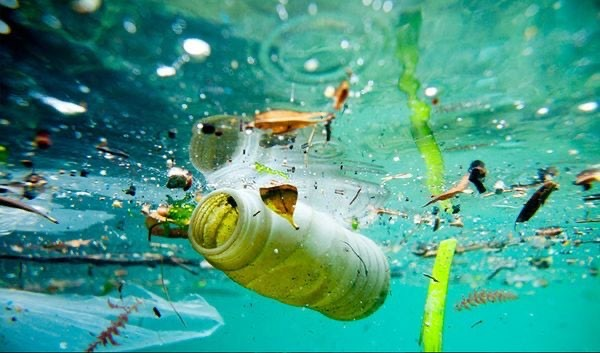
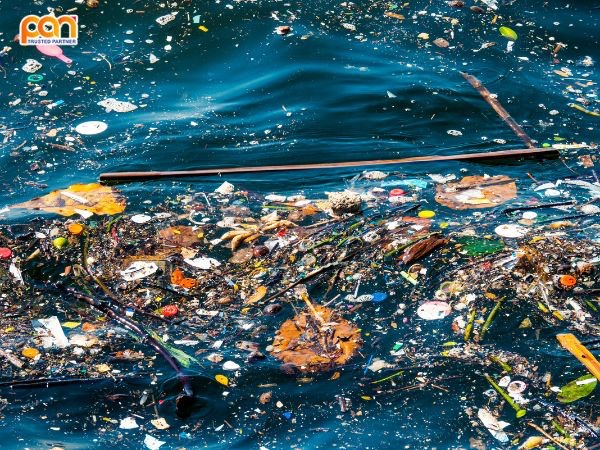
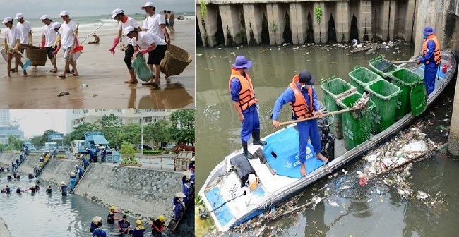
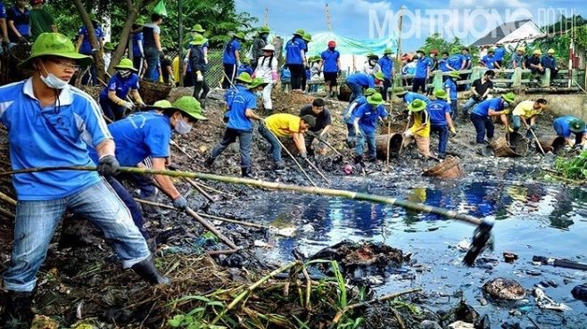

• Ô nhiễm nguồn nước mặt (sông, hồ, kênh rạch): Nhiều dòng sông lớn như sông Tô Lịch (Hà Nội), sông Sài Gòn, sông Cầu... đang bị ô nhiễm nặng nề bởi nước thải sinh hoạt và công nghiệp.
• Ô nhiễm nước ngầm: Gia tăng do rác thải chôn lấp không đúng quy chuẩn, rò rỉ hóa chất và thuốc trừ sâu từ nông nghiệp.
• Suy giảm chất lượng nước sinh hoạt: Nhiều khu vực nông thôn không có hệ thống xử lý nước sạch, người dân dùng nước giếng khoan, ao hồ bị nhiễm bẩn.
• Hậu quả: Ảnh hưởng đến sức khỏe con người (tiêu chảy, ung thư, nhiễm độc kim loại nặng...), làm suy thoái hệ sinh thái thủy sinh, ảnh hưởng đến nông nghiệp và du lịch.



